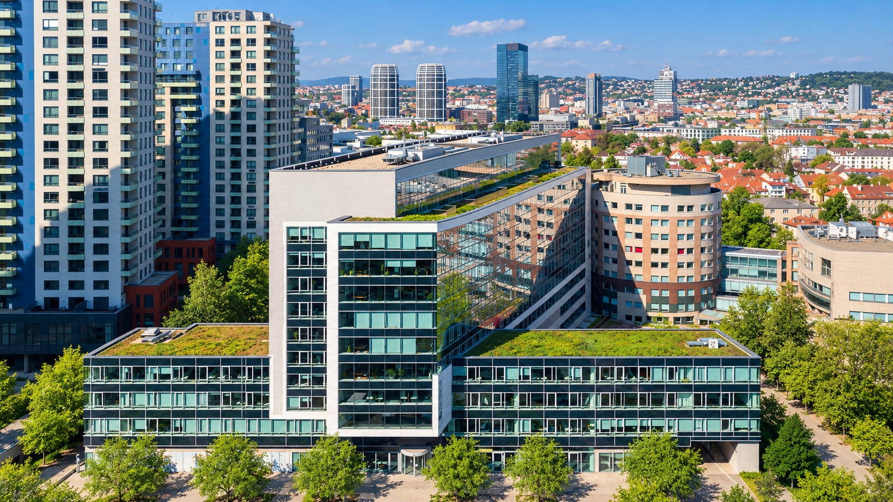
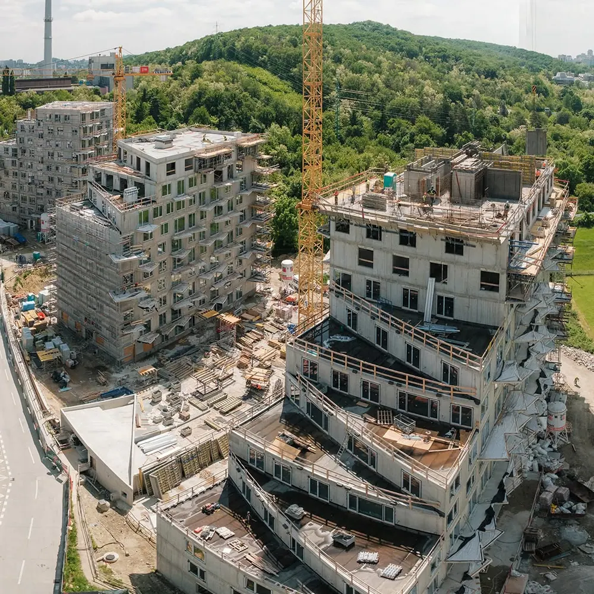
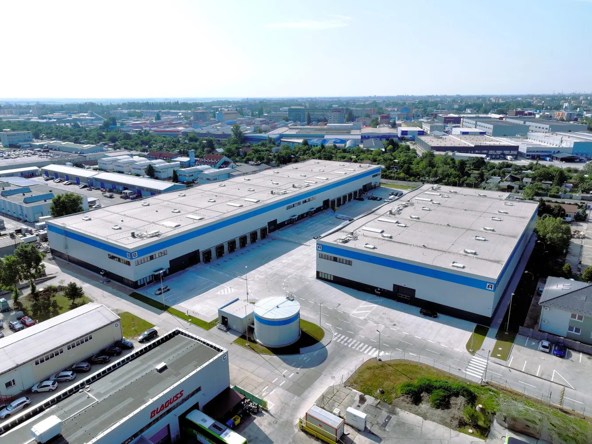

Fotografia zamestnanca

O SPOLOČNOSTI StavDM s.r.o.
Stavebné realizácie
od roku 2008.
Realizujeme stavebné a dokončovacie práce pre komerčné, priemyselné aj verejné projekty na Slovensku a v Česku.
Spoznajte náš príbeh
Kvalita
a spoľahlivosť
v každom projekte.
Staviame kvalitne a spoľahlivo od roku 2008.
NÁŠ PRÍBEH
Firma StavDM, s.r.o. pôsobí na trhu od roku 2008 a venuje sa stavebným prácam na Slovensku a v Čechách. Svoje pôsobenie postupne rozširuje s dôrazom na kvalitu, spoľahlivosť a profesionálny prístup.
Za roky pôsobenia sme získali množstvo skúseností a vybudovali si stabilné vzťahy so zákazníkmi a obchodnými partnermi. Našou prioritou je kvalitne a spoľahlivo odvedená práca, spokojnosť zákazníkov a dodržiavanie dohodnutých termínov.
Ku každej zákazke pristupujeme zodpovedne a individuálne s cieľom dosiahnuť spokojnosť obchodného partnera, dodávateľa a zákazníka.




PREDSTAVITELIA SPOLOČNOSTI
Spoznajte vedenie StavDM
Fotografia zamestnanca
Fotografia zamestnanca
SPOLUPRÁCA
Máte záujem
o spoluprácu?
Neváhajte nás kontaktovať. Radi s vami preberieme všetky možnosti a detaily.